Activando tu versión AMP
jansete, mgzrobles
#drupalCampSpain2016
Sobre nosotros
Juanen Bernal - @jansev3n
Drupal Developer en
drupal.org/u/jansete
Martín González - @mgzrobles
Drupal Leader en
drupal.org/u/mgzrobles
¿Qué es AMP?

Cuando una página no carga, los editores pierden lectores y oportunidades de ingresos
Accelerated Mobile Pages ( AMP )
es un proyecto open source
que pretende ayudar a los editores a crear
contenido optimizado para móviles
y que pueda ser
cargado instantáneamente
en todas partes.
- ¿Necesito poner sí o sí una versión AMP?
- ¿Sustituye a mi sitio normal?
- ¿Puedo poner mi propio css y javascript?
- ¿Qué pasa con los vídeos?
- ¿Y con la publicidad?
- ¿Y la analítica web?
- ...........
AMP HTML
Es HTML extendido con componentes AMP.
Algunas etiquetas HTML se sustituyen por su equivalente AMP
Por ejemplo img pasa a ser amp-img
<html ⚡>
<head>
<meta charset="utf-8">
<link rel="canonical" href="hello-world.html">
<meta name="viewport" content="width=device-width,minimum-scale=1,initial-scale=1">
<style amp-boilerplate>body{-webkit-animation:-amp-start 8s steps(1,end) 0s 1 normal both;-moz-animation:-amp-start 8s steps(1,end) 0s 1 normal both;-ms-animation:-amp-start 8s steps(1,end) 0s 1 normal both;animation:-amp-start 8s steps(1,end) 0s 1 normal both}@-webkit-keyframes -amp-start{from{visibility:hidden}to{visibility:visible}}@-moz-keyframes -amp-start{from{visibility:hidden}to{visibility:visible}}@-ms-keyframes -amp-start{from{visibility:hidden}to{visibility:visible}}@-o-keyframes -amp-start{from{visibility:hidden}to{visibility:visible}}@keyframes -amp-start{from{visibility:hidden}to{visibility:visible}}</style><noscript><style amp-boilerplate>body{-webkit-animation:none;-moz-animation:none;-ms-animation:none;animation:none}</style></noscript>
<script async src="https://cdn.ampproject.org/v0.js"></script>
</head>
<body>Hello World!</body>
</html>
AMP JS
Librería que implementa las recomentaciones de rendimiento de AMP.- Proporciona las etiquetas personalizadas (componentes AMP)
- Carga asíncrona de recursos externos para que nada bloquee la página durante el renderizado.
- Precalculado del layout de cada elemento antes de que los recursos se carguen.
Google AMP Cache
"We intend to open our cache servers to be used by anyone free of charge."¿Cómo AMP mejora el rendimiento?
¿Cómo AMP mejora el rendimiento?
- Define los tamaños de los recursos
- La carga de las fuentes debe ser eficiente
- Minimiza los recálculos de los estilos
- Sólo ejecuta animaciones aceleradas por hardware (GPU)
- Todo el CSS debe ser en línea y con tamaño máximo
¿Cómo AMP mejora el rendimiento?
- No permite que los componentes bloqueen el renderizado
- Permite sólo scripts asíncronos
- Los scripts de terceros fuera de la página principal
- Prioriza la carga de recursos
¡Carga las páginas como un rayo!
Creando nuestra primera página AMP
AMP HTML
Componentes AMP
Incluyendo una imagen
Antes:

Componente AMP:
Publicidad
Publicidad
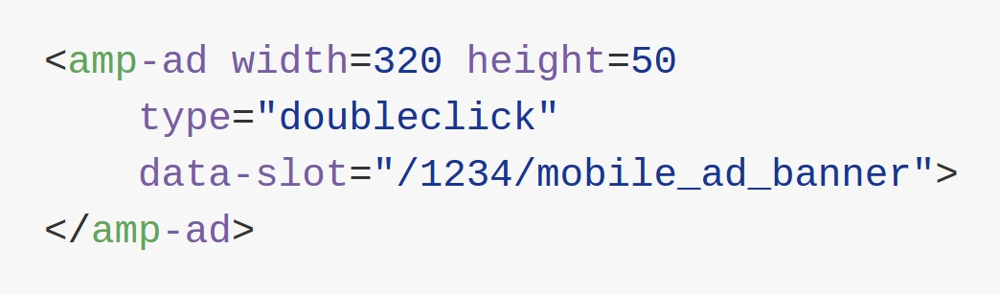AdSense, DoubleClick o Smart AdServer ya están en la lista de servicios compatibles.
Componentes extendidos
Cada componente tiene sus propios atributos y requieren de un script adicional.
- amp-youtube
- amp-analytics
- amp-audio
- amp-carousel
- amp-facebook
- amp-iframe
- amp-lightbox
- etc
Youtube
Antes:
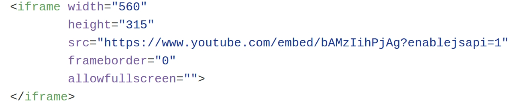Youtube
Script:
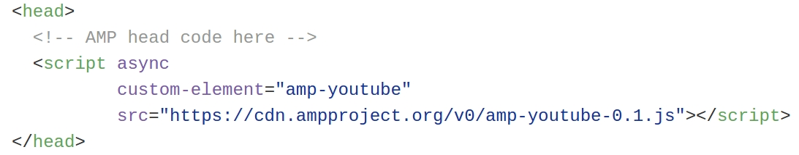Componente AMP:
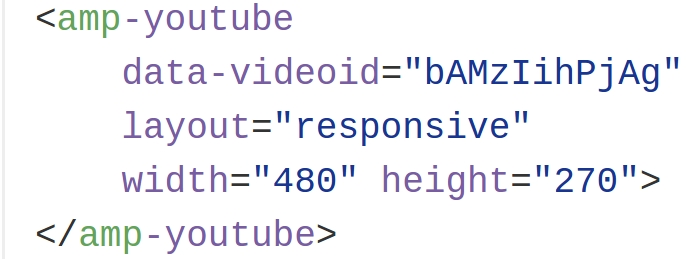Analytics
Antes:
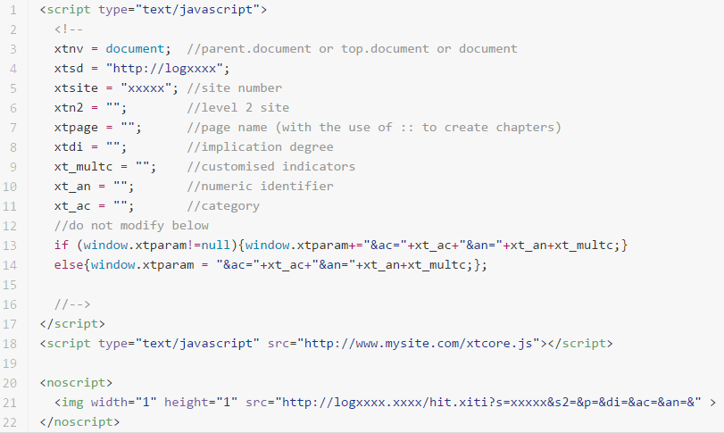Analytics
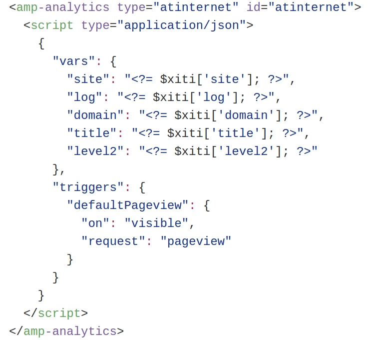AT Internet, Chartbeat, comScore, o Google Analytics ya están en la lista de servicios compatibles.
Cambiando la presentación
Cambiando la presentación
- Usaremos una única etiqueta
<style amp-custom>dentro de la etiqueta<head> - Algunos estilos, transiciones y animaciones no están permitidos, como:
- !important
- filter
- selectores universales: *, :not()
- Excepción con las fuentes custom
- Límite de tamaño de 50 kilobytes
- Valida tu CSS
Previsualización
Como cualquier HTML podemos abrirlo directamente con el navegador. Aunque es recomendable que corra bajo un servidor web.
Validación
Añadiendo #development=1
http://localhost:8000/released.amp.html#development=1
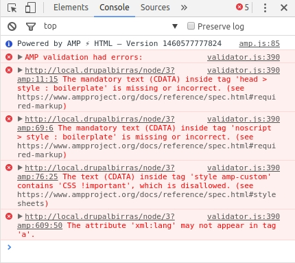 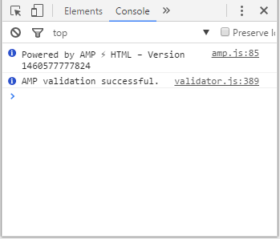Validación
También puedes emular un dispositivo móvil desde Chrome y abrir https://g.co/ampdemo
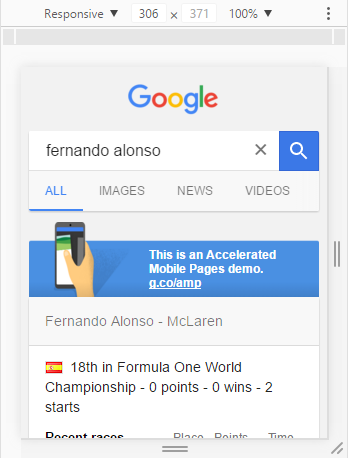 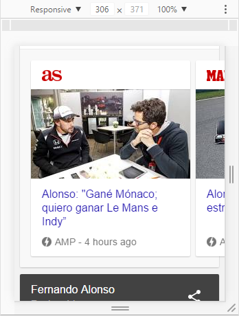Prepara tu página AMP para su distribución
Relacionamos la versión normal con la versión AMP
Relacionamos la versión AMP con la versión básica
Si sólo tienes versión AMP
Microformatos: Schema.org
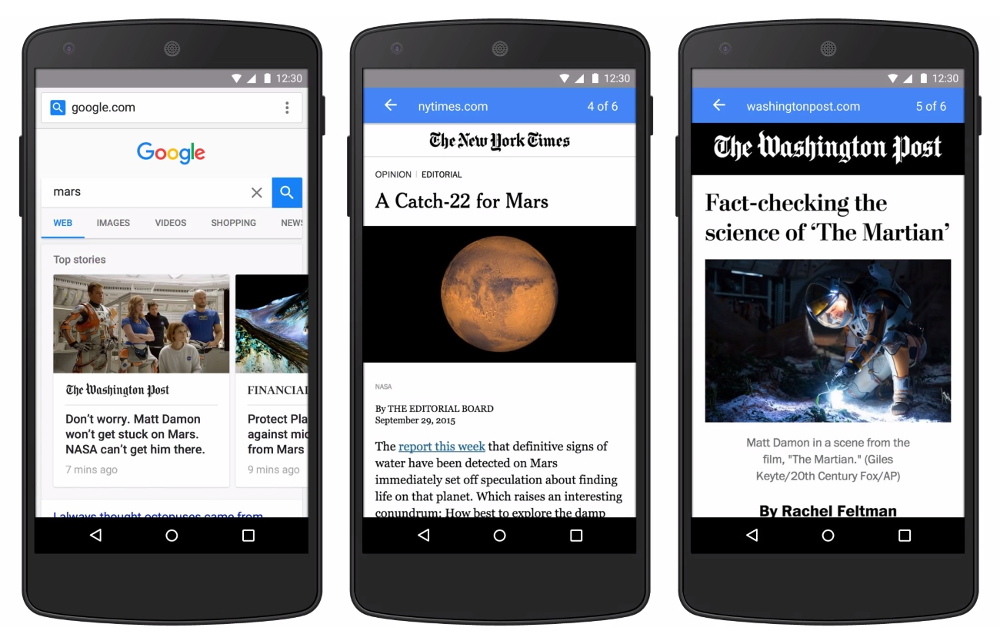Validación de Schema.org
https://developers.google.com/structured-data/testing-tool

¿Y ahora qué? Drupal y AMP
Drupal y AMP
- El módulo AMP: https://www.drupal.org/project/amp
- El theme AMP: https://www.drupal.org/project/amptheme
- La librería AMP: https://github.com/Lullabot/amp-library
Cómo funcionan los proyectos AMP en Drupal 7
- PHP 5.5+
- Lullabot AMP Library
- composer_manager, amptheme, amp
- beta
Demo
Workflow

Contrib vs Custom
Contrib
- Hay una gran empresa detrás: Lullabot
- La idea es muy buena:
- Módulo sencillo de entender
- AMP View mode
- AMP Field Formatters
- AMP Theme
- Librería: Convierte y valida AMP HTML
- Proporciona Bloques
- Fácil de configurar
Custom
- Contrib todavía no funciona bien del todo
- PHP 5.3+
- Ampliando el contrib
- Soporte para otros componentes AMP
- Schema.org, necesario para Top Stories
- ¿Context? Desactiva bloques definiendo tus condiciones
- Varnish + Expire
if (req.url ~ "^/(.*)[?|&]amp(.*)") {
unset req.http.Cookie;
}
...
set beresp.ttl = 2w;¡Aprovecha y contribuye!
Enlaces de interés
- Página del proyecto: https://www.ampproject.org
- Proyecto github de AMP: https://github.com/ampproject
- Proyecto AMP en Drupal: https://www.drupal.org/project/amp
- Theme de AMP en Drupal: https://www.drupal.org/project/amptheme
- Librería de Lullabot AMP PHP: https://github.com/Lullabot/amp-library
- Schema.org para Top Stories: https://developers.google.com/structured-data/carousels/top-stories